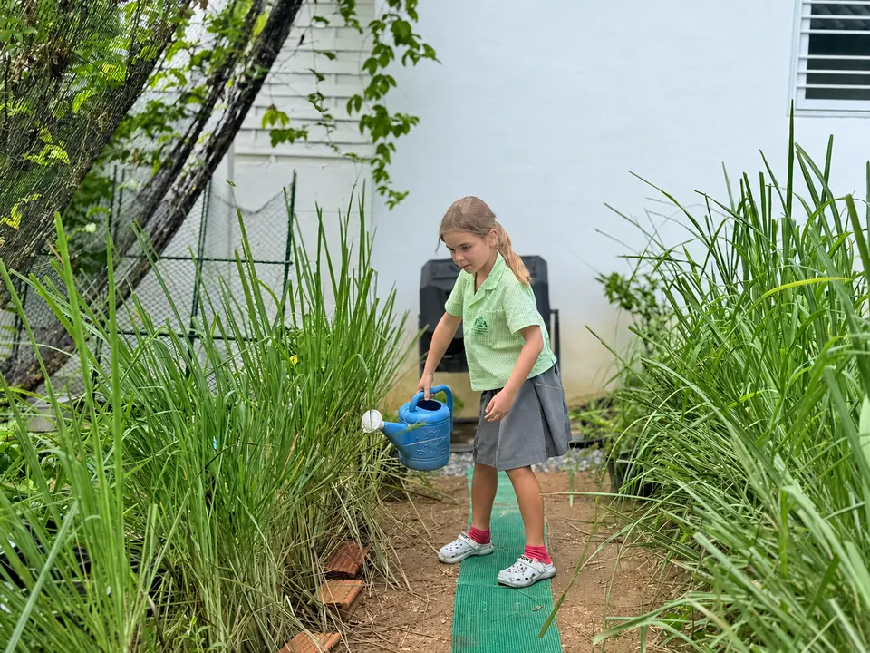
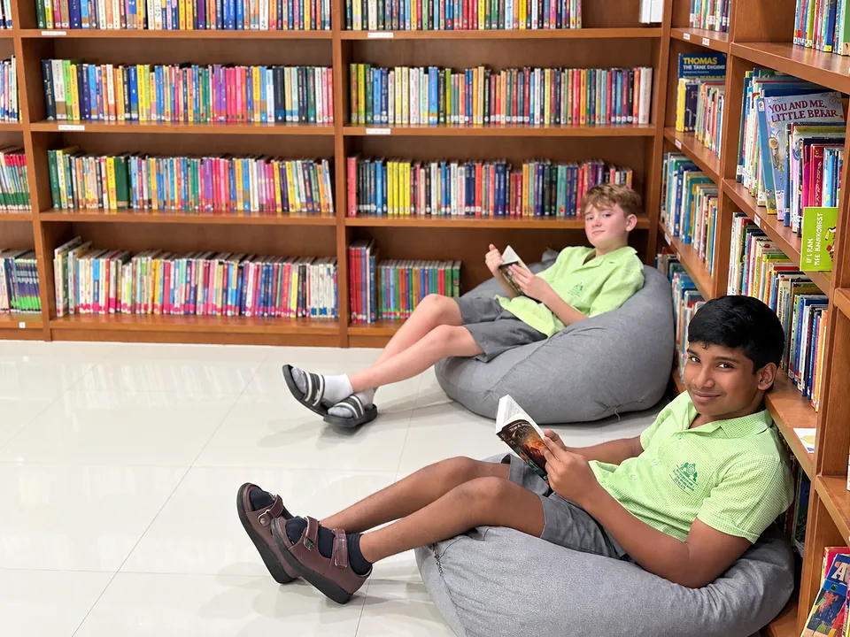
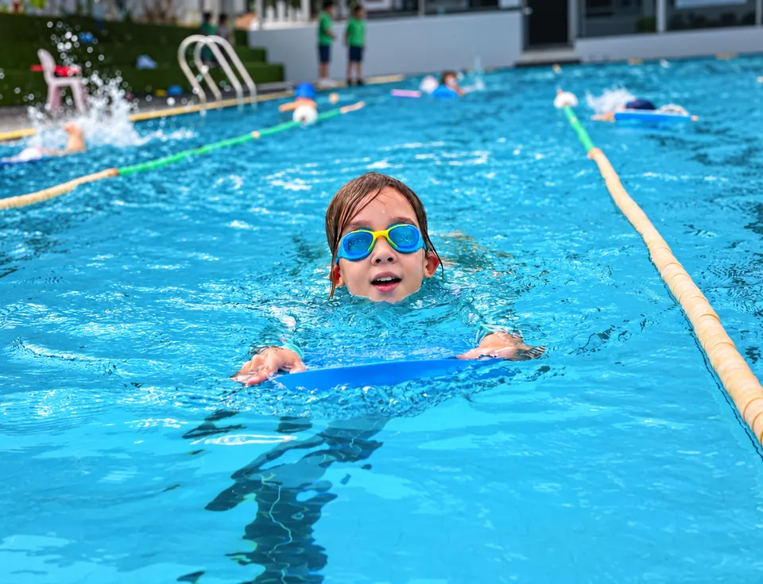

Science Laboratory
A specialist space for practical science and hands-on investigation.
A natural campus designed for learning, creativity, physical activity and environmental education.
Greenacre is set on a 7.5 rai natural campus in the south of Koh Samui, and the island setting is an important part of the school's identity. Our environment supports an approach to education that connects academic learning with cultural understanding, wellbeing and awareness of the natural world.
The campus brings together classroom teaching, specialist learning and the wider life of the school. Outdoor classrooms, gardens and growing areas extend learning beyond conventional classroom spaces and reflect Greenacre's environmental approach. Early Years children also have enriching outdoor play areas designed for active exploration and play.


Families considering Greenacre are encouraged to visit with their child during a normal school day, meet the team and experience the atmosphere of the school for themselves.
A specialist space for practical science and hands-on investigation.
Dedicated facilities support computing and technology-based learning.
Books and learning resources support reading and study from Early Years through Secondary.
A 25 metre on-campus pool supports swimming and physical education.
Artificial grass areas provide dedicated surfaces for ball games, with table tennis available for recreation, lessons and after-school clubs.
A dedicated court provides space for basketball and active recreation.
Gardens and growing spaces connect environmental learning with practical experience.
Enriching outdoor play areas give younger children space to explore, move and learn through play.
Outdoor teaching spaces extend learning into Greenacre's natural campus.
